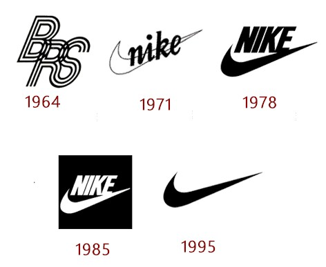

Nike, Inc. is an American multinational association that is involved in the design, development, manufacturing and worldwide marketing and sales of apparel, footwear, accessories, equipment and services. The company’s world headquarters are situated near Beaverton, Oregon, in the Portland metropolitan area (USA). It is a major producer of sports equipment and one of the world’s largest suppliers of athletic shoes and apparel. It employs more than 44,000 people worldwide and in 2014 the brand alone was valued as $19 billion (€17,5 billion), making it the most valuable brand between sports businesses.Founded by Bill Bowerman and Phil Knight on January 25 1964, as Blue Ribbon Sports, the company became officially Nike, Inc. on May 30 1971. The company was named after the Greek goddess of victory, Nike (Νίκη). Apart from its own brand, Nike market its products under Nike Pro, Nike+, Nike Golf, Nike Blazers, Air Jordan, Air Max and other as well as subsidiaries including brands Jordan, Hurley Int. and Converse. Nike sponsors many high-profile athletes and sports teams around the world, with the highly recognized trademarks of “Just Do It” and the Swoosh logo (which represents the wing of the Greek goddess Nike).
The mission
The mission of Nike Inc. is to drive product innovation for athletes everywhere.Countless ideas are tested in pursuit of aiding performance, injury risk reduction, enhancing perception and feel, and delivery of innovative products to athletes. The lab team consists of more than 40 researchers in different scientific disciplines such as biomechanics, physiology, physics, math, kinesiology, biomedical engineering and mechanical engineering,